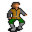

Stanwick¶| Stat | Value |
|---|---|
| Class | humanoid |
| HP | 0 |
| Max AP | 10 |
| Attack cost | 10 |
| Move cost | 10 |
| Damage | 0 |
| Attack chance | 0 |
| Block chance | 0 |
| Damage resistance | 0 |
| Critical skill | 0 |
| Critical multiplier | 0 |
Found on¶
Quests¶
- No rest for the wicked: stages 20, 25, 110
- brightport_nondisplay (hidden flag): stages 70
Dialogue (37 lines)
What the dialogue says, exactly as in the game files. Lines are listed once; links jump to the line a choice leads to.
brightport_stanwick_selector (silent check: the first matching branch below is taken)
- Next (if reached stage 128 of andor (hidden flag)) → brightport_stanwick_common
- Next (if 4 rounds passed since timer “stanwick”; NOT reached stage 128 of andor (hidden flag)) → brightport_stanwick_andor0
- Next (if reached stage 70 of brightport_nondisplay (hidden flag); NOT reached stage 128 of andor (hidden flag)) → brightport_stanwick_end
- Next (if reached stage 25 of No rest for the wicked; NOT reached stage 70 of brightport_nondisplay (hidden flag)) → brightport_stanwick12
- Next (if reached stage 20 of No rest for the wicked; NOT reached stage 25 of No rest for the wicked) → brightport_stanwick7
- Next (if NOT reached stage 20 of No rest for the wicked; reached stage 15 of No rest for the wicked) → brightport_stanwick1
brightport_stanwick_common Stanwick: “Hey $playername, how is your search going?”
- “I'm still looking for Andor.” → conversation ends
brightport_stanwick_andor0 Stanwick: “I think I now remember some things that could be useful in your search.”
- Next → brightport_stanwick_andor1
brightport_stanwick_end Stanwick: “Thank you $playername. I knew I could entrust this to you.”
- Next → brightport_stanwick_andor
brightport_stanwick12 Stanwick: “How's the investigation going, $playername?”
- “Do you know how I can enter the library?” (if reached stage 45 of No rest for the wicked; NOT reached stage 47 of No rest for the wicked; NOT reached stage 96 of No rest for the wicked) → brightport_stanwick13
- “Could you explain to me the details surrounding the incident?” (if NOT reached stage 96 of No rest for the wicked) → brightport_stanwick_incident
- “I returned the scroll to the headmaster, he'll release an apology for you later.” (if reached stage 96 of No rest for the wicked) → brightport_stanwick16
- “I have the scroll right here” (if carry 1× Secret scroll) → brightport_stanwick17
- “I have these fruits for you.” (if hand over 1× Fresh fruit for Stanwick) → brightport_stanwick_fruit
- “I'm still investigating. [Leave]” → conversation ends
brightport_stanwick7 Stanwick: “I wish I could, but now's not the right time. This incident that's happened left my mind in a haze.” — effects: sets stage 20 of No rest for the wicked, sets stage 126 of andor (hidden flag)
- Next → brightport_stanwick8
brightport_stanwick1 Stanwick: “Long time no see, $playername! What brings you to Brightport? Did Andor finally convince you to enroll, or did you just come to see me? [The boy laughs.]”
- “Ha, not in a thousand years! You guys were always making me run errands.” → brightport_stanwick3
- “I was getting bored back home with nothing to do!” → brightport_stanwick2
brightport_stanwick_andor1 Stanwick: “Andor is my friend, so when you told me he was missing, of course I was concerned. Not as much as I was about the document, if I'm being honest, but you know as well as I do that was no trivial thing.”
- Next → brightport_stanwick_andor2
brightport_stanwick_andor Stanwick: “Once I collect my memories I will tell you about Andor. Please come back in a few minutes.” — effects: sets stage 127 of andor (hidden flag), starts timer “stanwick”
brightport_stanwick13 Stanwick: “I gave the headmaster my library key. You should try asking him.”
- “I already did and he refused to give me the key.” (if reached stage 46 of No rest for the wicked) → brightport_stanwick_key
brightport_stanwick_incident Stanwick: “Several days ago, I was attending to my duties in the library when Headmaster Oswald came in to access the archive. When he returned, he was in a panic over a missing document.”
brightport_stanwick16 Dummy NPC: “Stanwick lets out a deep breath, his expression softening with visible relief as he sits down on his bed.” — effects: sets stage 70 of brightport_nondisplay (hidden flag), sets stage 110 of No rest for the wicked
- Next → brightport_stanwick_end
brightport_stanwick17 Stanwick: “What use do I have for it, $playername? Return it to the headmaster.”
- “Sorry.” → conversation ends
brightport_stanwick_fruit Stanwick: “I don't feel like eating anything right now, you can have them.” — effects: gives 1× Fruit assortment
brightport_stanwick8 Stanwick: “At this rate I will be freed of suspicion, but if they don't find the stolen document while I'm on room arrest, my reputation might never recover.”
- “I heard of the incident. I could help you with it.” → brightport_stanwick9
brightport_stanwick3 Stanwick: “Someone had to go buy the bread and pull the weeds. And it wasn't going to be us.”
- Next → brightport_stanwick4
brightport_stanwick2 Stanwick: “Yeah, I bet. Crossglen can be pretty boring, but it's also nostalgic.”
- Next → brightport_stanwick4
brightport_stanwick_andor2 Stanwick: “When it comes to strange details my recollections start sometime about a year ago, at the start of my third year and Andor's fourth, when we were handed our correspondence. He was given a sealed envelope. Nothing strange except it was…”
- Next → brightport_stanwick_andor3
brightport_stanwick_key Stanwick: “Hmm, let me think.”
- Next → brightport_stanwick14
brightport_stanwick_incident1 Stanwick: “Of course, I had nothing to do with it. As a matter of fact, the Headmaster and his assistant were the only ones I've seen go down there.”
brightport_stanwick9 Stanwick: “You would? But still, I'm not sure. This might be as difficult as finding a needle in a haystack.”
- “You can trust me. I've solved all sorts of mysteries on this journey.” → brightport_stanwick10
brightport_stanwick4 Stanwick: “Still, though, it's been a while, huh? Six years since my father sent me to Crossglen for safety, when I met Andor and you.”
- Next → brightport_stanwick5
brightport_stanwick_andor3 Stanwick: “Later that same week, I'd fallen asleep at my desk while studying. When I woke, Andor wasn't in his bed, but at the time I thought little of it. I stepped to the hallway window for some fresh air and happened to glance outside. Someone…”
- Next → brightport_stanwick_andor4
brightport_stanwick14 Stanwick: “I once accidentally damaged an expensive book cover. To get it fixed, I turned to someone nicknamed Counterfeit, from the Brightport Thieves Guild. He managed to restore it in no time. You should try asking him for help.”
- “Where can I find the thieves Guild?” → brightport_stanwick15
- “I know exactly where to look.” → conversation ends
brightport_stanwick_incident2 Stanwick: “Shortly after, every senior student and teacher was gathered in the lecture room for questioning. No one knew much about it, so it was over quickly. Afterwards, the Headmaster decided I would stay in my room until the end of the…”
- “Wasn't that a little too rash?” → brightport_stanwick_incident3
brightport_stanwick10 Stanwick: “Thank you $playername, I'm convinced I can entrust this to you.”
- Next → brightport_stanwick11
brightport_stanwick5 Stanwick: “By the way, did Andor accompany you here? I was hoping I could ask for his help on something.”
- “Andor has been missing and I was sent here to search for him.” → brightport_stanwick6
brightport_stanwick_andor4 Stanwick: “Sometimes he'd fidget with a button. I could tell it was Nor City made since my family's from there. But your family's never been there right?”
- “I don't think so.” → brightport_stanwick_andor5
brightport_stanwick15 Stanwick: “It's against the rules to tell. Try asking a man named Silvear, you'll recognize him by his blue cloak.”
brightport_stanwick_incident3 Stanwick: “All things considered, it was a reasonable response. The safekeeping of the archive was partly my responsibility. But being told to stay put while I could have done something to help find it does feel deeply unfair to me.”
- “I'll see what I can do.” → conversation ends
brightport_stanwick11 Stanwick: “OK. You should start by asking people around the academy. Maybe it will send you in the right direction. Good luck.” — effects: sets stage 25 of No rest for the wicked
brightport_stanwick6 Stanwick: “That's terrible news. But strangely, I'm not that surprised. Something about his behavior before graduation was bothering me.”
- “That might be something that could help my search. Could you tell me more?” → brightport_stanwick7
brightport_stanwick_andor5 Stanwick: “Yeah, just as I thought. There's a strange connection I feel between Andor going missing and Nor City. I mean, you've heard what those Feygard folk say about it. Those who've been there know it's not true, but the others always call it a…”
- “Do you think Andor went there?” → brightport_stanwick_andor6
- “I think so too, on my travels I met a person named Lodar and... [Tell him the whole story.]” (if reached stage 72 of andor (hidden flag)) → brightport_stanwick_andor8
brightport_stanwick_andor6 Stanwick: “Perhaps. We've spent hours discussing the visage of the city as you approach its gates, the craftsmen and merchants going about. Even the unsavory buildings which add to the charm. We've spent equal amounts reading about Feygard, but if…”
- Next → brightport_stanwick_andor7
brightport_stanwick_andor8 Stanwick: “What this Lodar man told you lines up with what I've said, without a doubt, there is a connection. I don't know who Lady Lydalon is, but I doubt they'll let you meet her so easily The high priest of Nor City, of all places.”
- Next → brightport_stanwick_andor7
brightport_stanwick_andor7 Stanwick: “Listen, $playername. I know that after everything you've done for me, what I'm saying may not seem like much. So instead, I want to entrust you with something far more important.”
- Next → brightport_stanwick_andor9
brightport_stanwick_andor9 Stanwick: “This is a signet ring with my family's heraldry. Once you visit Nor City, bring it to my father Jorwick and tell him what you're there for. It will help you get around the city.” — effects: sets stage 128 of andor (hidden flag), gives 1× Stanwick's signet ring
- “Thank you Stanwick, see you later!” → conversation ends
- “It was worth the trouble.” → conversation ends
Community notes¶
Written by players, not generated from game data. Observations: what players notice in-game · Lore: the in-world story · Trivia: real-world facts, references, development history · Theory / speculation: unconfirmed ideas; may just be unfinished content
Observations¶
Nothing here yet. Know something? Add it.
Lore¶
Nothing here yet. Know something? Add it.
Trivia¶
Nothing here yet. Know something? Add it.
Theory / speculation¶
Nothing here yet. Know something? Add it.
Monster ID: brightportnpc · Data from v0.8.18